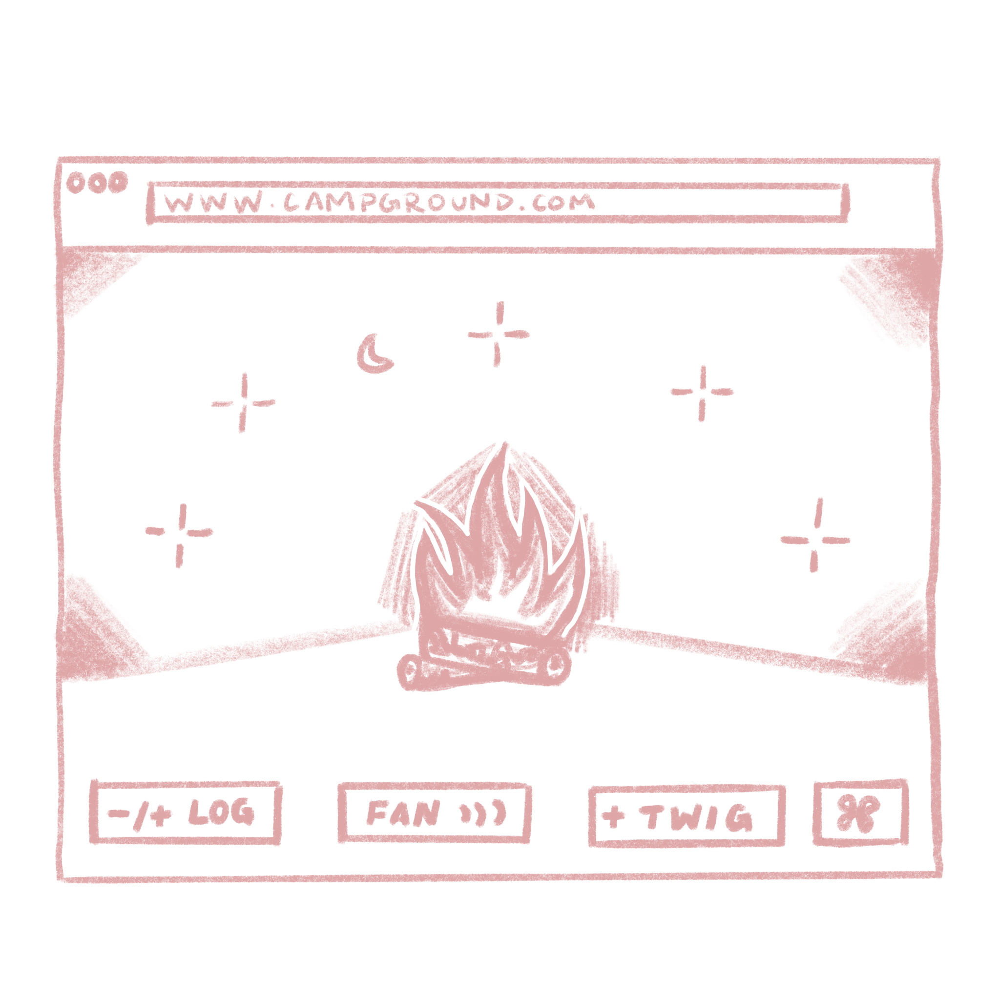

response to "a rant about technology" by ursula k. le guin.
image description: a website where the user must tend to a on-going flame, for as long as possible.
ursula speaks to this when referring to simple technology, so a website meant to complete a primitive task interests me.

response to "my website is a shifting house" by laurel schwulst.
description: a website that is an on-going animation of water dripping into two glasses that read half full and half empty.
this writing promtped me to reflect my perspective in general and for what a website could be, so i envisioned a website that prompted a similar reflection for the user.